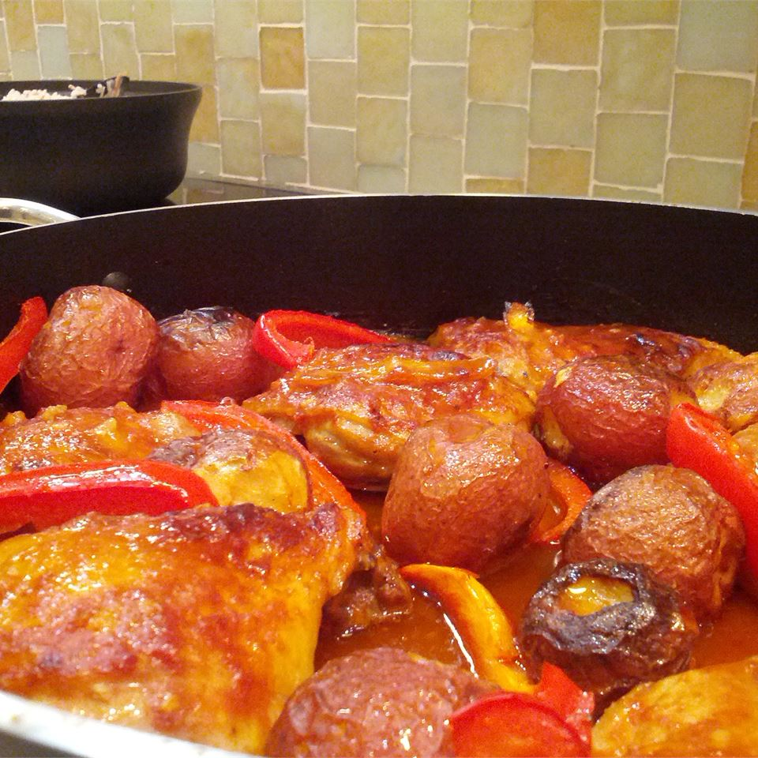

Chicken Afritada

Description
This is an excellent chicken recipe with an interesting blend of ingredients - from soy sauce and ginger, to tomato sauce and sweet peas - best served over hot rice.
Ingredients
- ½ cup vegetable oil
- 1 onion, chopped
- 1 tablespoon chopped fresh ginger
- 1 whole chicken, cut into pieces
- 1 (10 ounce) can tomato sauce
- ½ cup soy sauce
- ½ cup oyster sauce
- 2 teaspoons garlic salt
- 1 (10 ounce) can baby peas, drained
- 1 red bell pepper, cut into strips
- 4 medium potatoes, peeled and cubed
- 1 pinch ground black pepper
Steps
- Heat oil in a large skillet over medium-high heat. Cook onion and ginger for 3 minutes, browning slightly. Lay chicken in the skillet, skin side down. Fry until
golden, about 10 minutes, turning once with tongs.
- In a bowl, whisk together tomato sauce, soy sauce, oyster sauce, and garlic salt, and pour evenly over chicken. Gently fold in peas, bell pepper, and potato.
Simmer 20 to 30 minutes, or until chicken is cooked through and no longer pink in the center. Season with ground black pepper.
Back to homepage